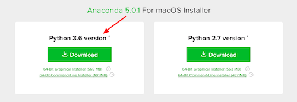
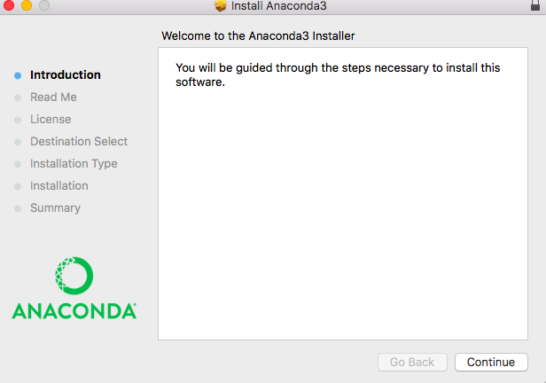
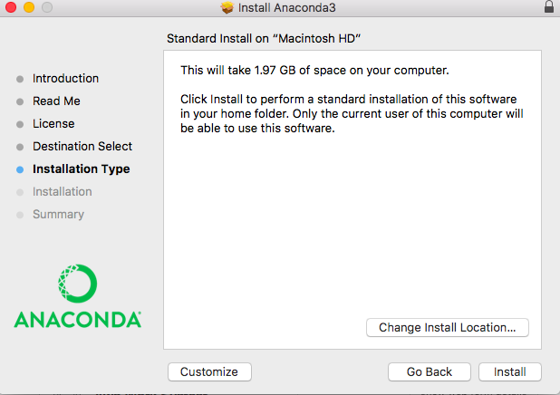
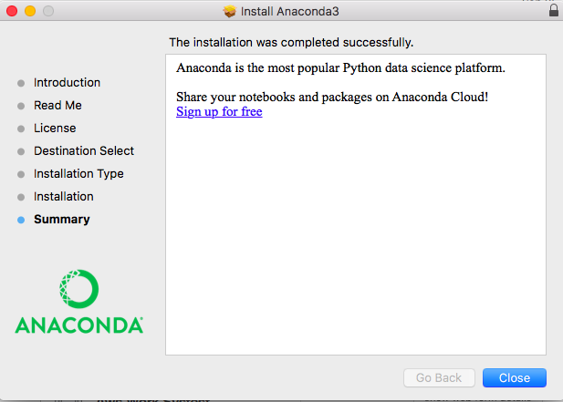

Anaconda 5.0 was released a few days back. I tried all the sample solutions and everything works as expected. The chapter programs should keep working as well.
The versions of the relevant software in this release are:
- Python 3.6
- sympy 1.1.1
- matplotlib 2.1.0
You can update your existing installation using:
$ conda update conda $ conda install anaconda=5.0
(Thanks to Dan Wolfe for informing me of the incorrect command to install anaconda=5.0)
A fresh installation of Anaconda 5.0 should still be similar to the instructions for earlier versions.




I have so far verified both on Mac OS X and Linux. If you find any issues on Windows, please email me at doingmathwithpython@gmail.com or post your query/tip to any of the following community forums: